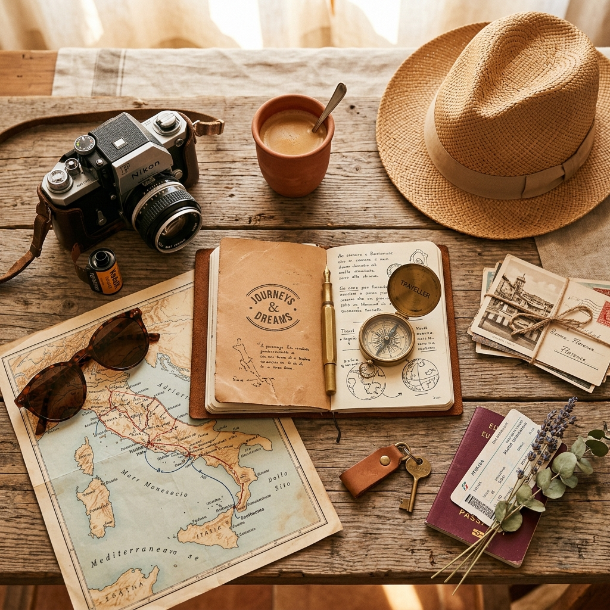

01
Minimalist Packing for India

Minimalist packing is not about self-deprivation—it is about avoiding the hassle of carrying heavy bags through busy train stations and stone alleys. In India, dress styles are conservative but light. Choose loose cotton garments, robust slip-on shoes for temple entry, and a light rain shell for sudden monsoons.
Packing Checklist: